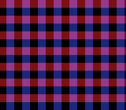

|
OpenSNES
Modern Open-Source SNES Development SDK
|
|
OpenSNES
Modern Open-Source SNES Development SDK
|
A 50 % blend of two layers without colour math: SETINI bit 3 interleaves the sub screen and the main screen column by column.

BG1 (red horizontal bars) is on the main screen, BG2 (blue vertical bars, scrolling) on the sub screen, and colour math is off: without pseudo-hires the sub screen never reaches the output. With it, the PPU outputs 512 pixels per line, the sub screen on the even columns and the main screen on the odd ones; a CRT on composite blends each pair, and so does an emulator's 256-pixel view — purple where the bars cross. Press A to toggle it.
Open pseudo_hires.sfc in luna (or any SNES emulator) and press A.
testing/manifests/color_pseudo_hires.toml presses A twice and checks SETINI ($08, $00, $08), the screen designations and that BG2 keeps scrolling.
| Module | Purpose |
|---|---|
| console | System initialization, videoSetPseudoHires() |
| dma | Palettes, tiles and maps to CGRAM / VRAM |
| background | BG1 / BG2 char and map bases, BG2 scroll |
| input | The A button |
| tile | The two tiles, built from pixels |